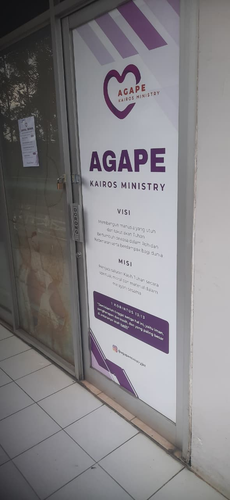
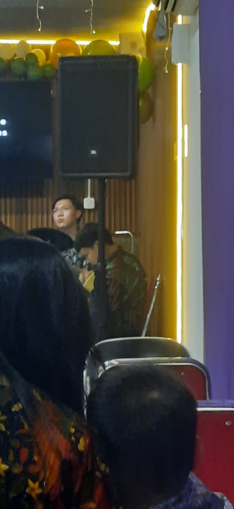
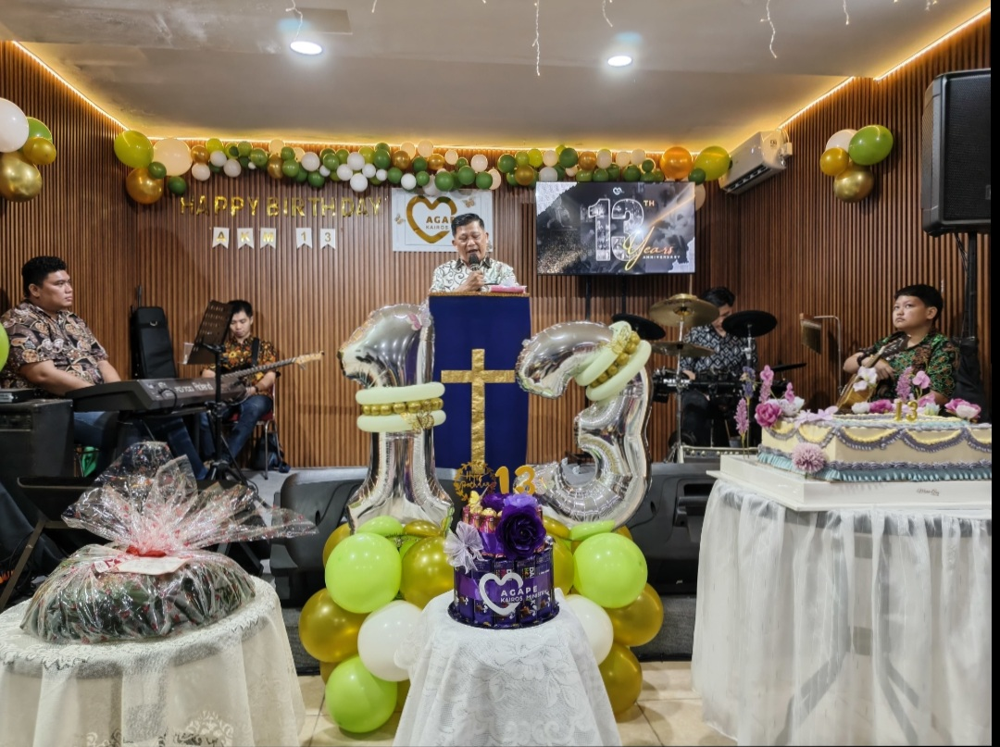

Day 4 dapat invitation dari gereja + diajakin masbro, lokasi gereja yang sekarang, lumayan luas daripada yang sebelumnya. Gerejanya keliatan makin meriah di ulang tahun gereja yang ke-13. ketemu ama orang-orang yang sebagian kenal sebagian kagak (banyakan ikut online daripada onsite)
Diawal dikasi tahu "dengerin baik-baik, entar ada quiznya". Tapi pas pertanyaan terakhirnya agak melenceng. Di soal yang ini diambil dari Matius 8:14-15
14. Setibanya di rumah Petrus, Yesus pun melihat ibu mertua Petrus terbaring karena sakit demam.
15. Maka dipegang-Nya tangan perempuan itu, lalu lenyaplah demamnya. Ia pun bangunlah dan melayani Dia.
Pertanyaannya adalah disini ada Ibu Mertua Petrus yang berarti Petrus sudah menikah, Siapakah Istri dari Petrus?
Disaat itu satu ruangan sunyi, dan ada yang menjawab, tapi jawabannya ga make sense tapi alasannya make sense
Jawabannya adalah "Nyonya Petrus" dengan alasan, sebenarnya Istri tidak pernah dicantumkan dalam alkitab


